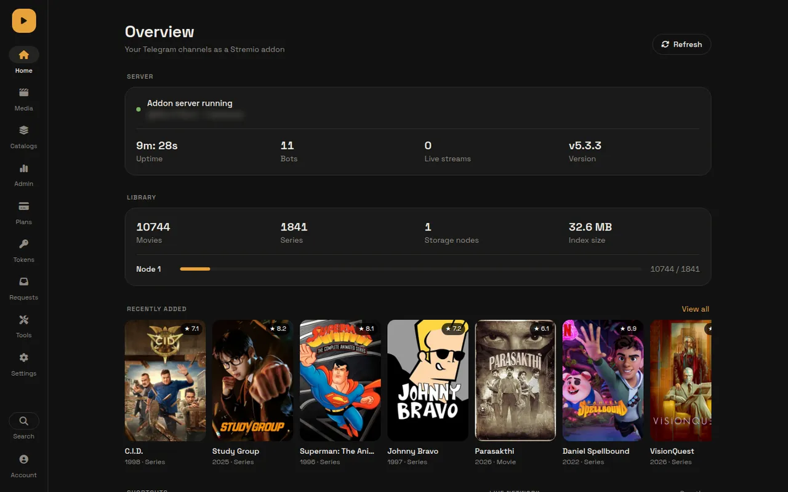
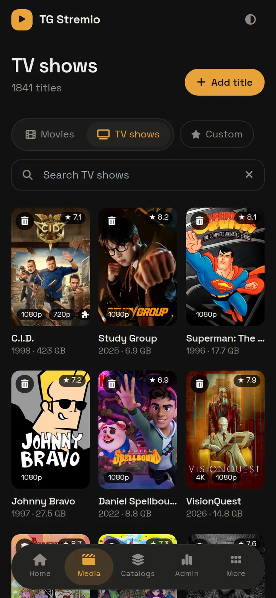
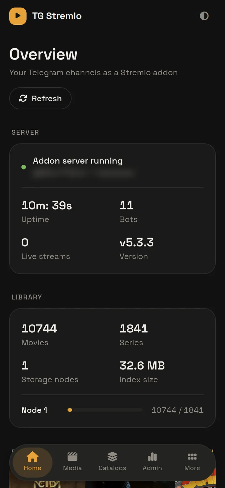

Your Telegram channels, streaming for everyone you share with.
A self-hosted server that indexes the movies and series in your Telegram channels and serves them as a Stremio and Nuvio addon. Give each person their own link, set limits, sell plans, and manage it all from a web panel.
- —GitHub stars
- —contributors
- 6ways to deploy


How it works
From a channel post to the play button.
Files stay in Telegram. The server keeps an index in MongoDB and streams straight from Telegram when someone presses play.
Forward a file
Post or forward a video to a channel where your bot is an admin. The file name tells the server what it is.
It gets indexed
Title, season, episode and quality are read from the name, then posters and details come from TMDB, TVDB, Cinemeta or Kitsu.
Press play
Everyone with an install link sees it in their catalog. Playback seeks instantly and never expires.
Features
Everything a shared library needs.
Permanent stream links
Fast streams straight from Telegram with full seeking. Links never expire.
Automatic metadata
Posters, logos, backdrops, cast and episode details from TMDB, TVDB, Cinemeta and Kitsu.
Auto and custom catalogs
Rows by language, OTT service and smart lists, plus your own curated catalogs in any order.
Private and exclusive rows
Catalogs for everyone, for chosen tokens, or for you alone. Hide titles from search when you need to.
One link per person
Each token has its own install link, daily and monthly data limits, and an optional expiry date.
Subscriptions in your bot
Users pick a plan and pay in Telegram. Approvers confirm and the bot hands out the link.
Split files and season packs
.001 parts and split zips play as one file. Combined season files get their own entry.
Anime aware
Mark a channel as anime for absolute episode numbers and Kitsu matching.
Global Search
Search extra Telegram channels live from Stremio with your own user session.
Viewers and analytics
Who is watching, top titles, top viewers, bandwidth per day and bot load.
Public request page
Viewers ask for titles. You mark them uploaded, denied or banned.
Cloudflare streaming
Send the video bytes through a Cloudflare Worker so a small free host is enough.
Scales out
Add more MongoDB databases and more bot tokens from Settings, no restart needed.
Announcements
New titles are posted to a channel with buttons that open them in Stremio or Nuvio.
Fast web panel
Three themes, phone layout with a dock, and keyboard shortcuts with a Ctrl+K command palette.
Backups
Export settings, catalogs, plans and tokens to a file, or export your library to the TeleStremio app.
Skip channel
Files that fail to match are set aside with a note on what to fix.
Per-user addon settings
Each person can sort qualities, hide some, and reorder or hide catalogs for their own link.
Screens
The web panel.
Shown from a live server. Pick a theme at the top of this page to see it in Ink, Paper or Night. Private details are blurred.

Home
Deploy
Pick where it runs.
Every option needs the same few values: a Telegram API ID and hash, a bot token, your user ID and two MongoDB links. The setup guide shows where to get each one.
VPS with Docker
RecommendedFastest streaming and full control. One docker compose up -d and a domain with HTTPS.
Heroku
Deploy from a ready-made Google Colab notebook. Paid dynos keep it awake.
Follow the steps →Koyeb
FreeOne-click deploy button. Pair it with Cloudflare streaming for smooth playback.
Follow the steps →Render
FreeOne-click deploy. The free plan sleeps after 15 idle minutes.
Follow the steps →orkestr
FreeEU hosting with 100 GB a month on the free plan. Connect your fork.
Follow the steps →No server at all
Just for yourself? The TeleStremio app runs the same idea on your phone or computer.
Get TeleStremio →Contributors
Built in the open.
Everyone who has shipped code to Telegram Stremio, live from GitHub. Join them.
FAQ
Questions people ask.
Do my files get uploaded anywhere?
What does it cost to run?
Stremio or Nuvio?
Why is my file not showing up?
Can I limit what each person uses?
I forgot the admin password.
How do I update?
git pull and docker compose up -d --build.